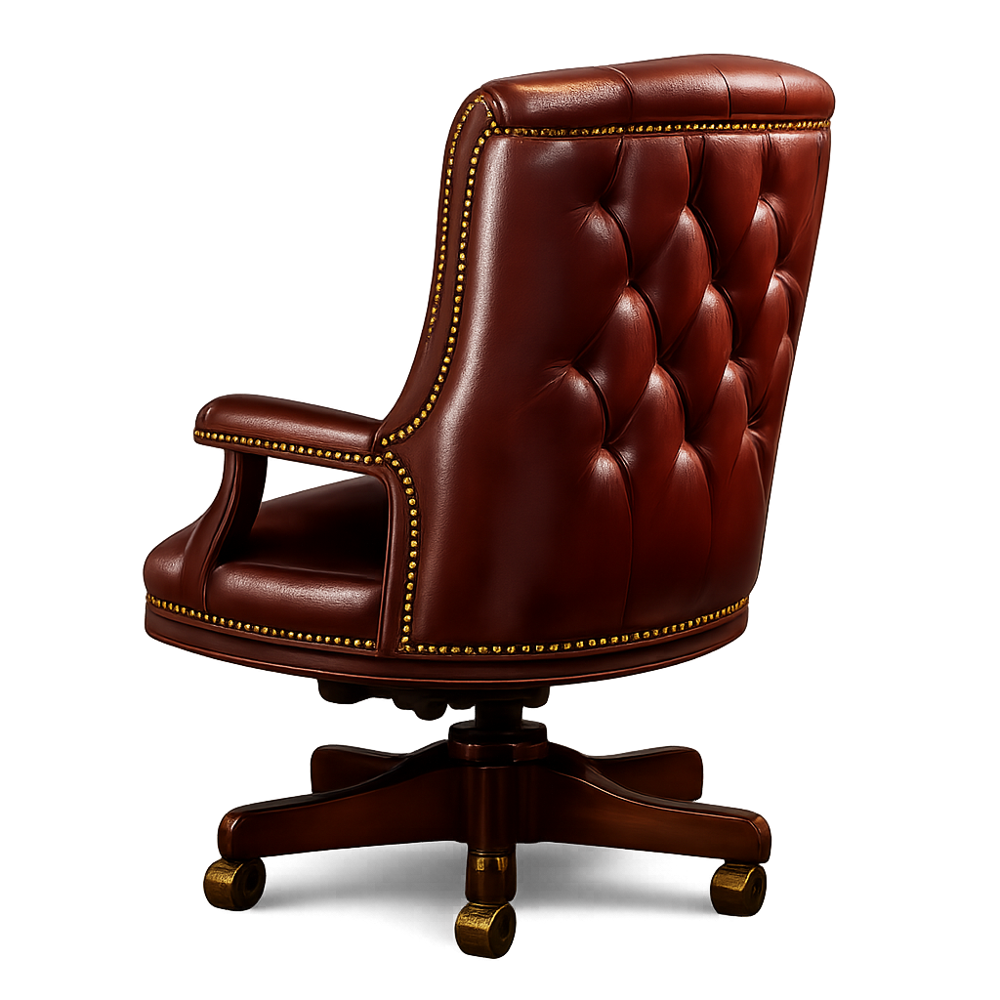

The Chair · Field Study Vol. I
I
A season ended last night.
June 19, 2021 · Game 7 · Overtime
II
Three stars. Twelve playoff minutes.
A hamstring · an ankle · a toe
III
Brooklyn, the morning after.
Atlantic Avenue · 6:30 AM ET
click to enter

Take the chair
Choose a room
Click the chair, or pick a room to swap the view.